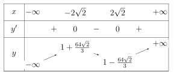
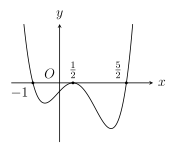
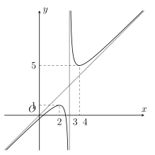
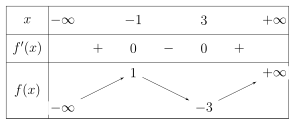
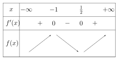
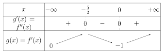
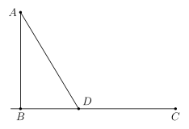

Phần I. Thí sinh trả lời từ câu 1 đến câu 12, mỗi câu hỏi chọn một phương án.
Câu 1
Cho hàm số y=32x3−16x+1. Hàm số đã cho đồng biến trên khoảng nào dưới đây?
A.(3;+∞).
B.(−∞;–2).
C.(2;4).
D.(–2;2).
Hiện/ẩn lời giải — Câu 1
Ta có y′=2x2−16. Bảng biến thiên:

Vì (3;+∞)⊂(22;+∞) nên hàm số đồng biến trên khoảng (3;+∞).
Câu 2
Cho hàm số y=x−2x2−4x+5. Khẳng định nào sau đây là đúng?
A. Điểm cực tiểu của hàm số là 2.
B. Cực đại của hàm số bằng 1.
C. Hàm số có hai điểm cực trị cùng dấu.
D. Giá trị cực đại của hàm số lớn hơn giá trị cực tiểu của hàm số.
Hiện/ẩn lời giải — Câu 2
Tập xác định D=R∖{2}.
Ta có
y′=(x−2)2(2x−4)(x−2)−(x2−4x+5)=(x−2)2x2−4x+3
y′=0⇔x=1 hoặc x=3.
Các điểm cực trị của hàm số là x=1 và x=3, đều là các số dương (cùng dấu).
Câu 3
Cho hàm số y=3x3−2x2−2x+1. Khẳng định nào sau đây là sai?
A. Điểm cực đại của hàm số là M(–1;613).
B. Đồ thị hàm số có hai điểm cực trị nằm về hai phía của trục tung.
C. Giá trị cực tiểu của hàm số bằng −37.
D. Hàm số đạt cực tiểu tại x=2.
Hiện/ẩn lời giải — Câu 3
Ta có y′=x2−x−2=0⇔x=–1 hoặc x=2.
Hàm số đạt cực đại tại x=–1, điểm cực đại của đồ thị hàm số mới là M(–1;613), còn điểm cực đại của hàm số là x=–1. Do đó khẳng định A sai về cách dùng thuật ngữ.
Câu 4
Cho hàm số y=f(x) có đạo hàm liên tục trên R. Hình vẽ bên là đồ thị đạo hàm của nó. Hàm số y=f(x) nghịch biến trên khoảng nào dưới đây?

A.(–1;25).
B.(21;+∞).
C.(25;+∞).
D.(−∞;–1).
Hiện/ẩn lời giải — Câu 4
Hàm số y=f(x) nghịch biến trên các khoảng mà f′(x)<0 (phần đồ thị f′(x) nằm phía dưới trục hoành).
Dựa vào đồ thị hàm số y=f′(x), ta thấy f′(x)⩽0 trên [−1;25].
Do đó, hàm số y=f(x) nghịch biến trên (–1;25). Trong các phương án, khoảng (–1;25) thỏa mãn.
Câu 5
Cho hàm số y=x3+3x2−3x+2. Phương trình đường thẳng đi qua hai điểm cực trị của đồ thị hàm số là:
A.y=–4x+11.
B.y=4x+11.
C.y=–4x+3.
D.y=–4x+1.
Hiện/ẩn lời giải — Câu 5
Ta có y′=3x2+6x−3=3(x2+2x−1). Giải phương trình y′=0 tìm được nghiệm x=–1−2 hoặc x=–1+2.
Từ đó tìm được toạ độ hai điểm cực trị là A(–1+2;7−42) và B(–1−2;7+42).
Phương trình đường thẳng đi qua 2 điểm này là
xB−xAx−xA=yB−yAy−yA
Từ đó tìm được đường thẳng đi qua hai điểm cực trị là y=–4x+3.
Câu 6
Một chất điểm chuyển động trên trục tọa độ có phương trình chuyển động là s(t)=31t3−5t2+24t (trong đó t tính bằng giây, t⩾0 và s tính bằng mét). Khi đó, v(t)=s′(t) là vận tốc của chất điểm. Trong khoảng thời gian nào (đơn vị giây) tính từ lúc bắt đầu chuyển động, vận tốc của chất điểm giảm?
A.(0;6).
B.(5;+∞).
C.(0;5).
D.(4;6).
Hiện/ẩn lời giải — Câu 6
Ta có v(t)=s′(t)=t2−10t+24.
Gia tốc của chất điểm a(t)=v′(t)=2t−10.
Vận tốc của chất điểm giảm khi v′(t)<0⇔2t−10<0⇔t<5.
Do t⩾0 nên t∈(0;5).
Câu 7
Cho hàm số y=f(x) xác định, liên tục trên R∖{3} và có đồ thị là đường cong trong hình vẽ bên. Hàm số đã cho đồng biến trên khoảng nào dưới đây?

A.(4;+∞).
B.(−∞;3).
C.(3;5).
D.(2;3).
Hiện/ẩn lời giải — Câu 7
Dựa vào đồ thị hàm số, ta thấy đi từ trái sang phải:
Trên khoảng (4;+∞), đồ thị hàm số đi lên, do đó hàm số đồng biến trên khoảng (4;+∞).
Trên các khoảng (2;3) và (3;4), đồ thị đi xuống (hàm số nghịch biến).
Câu 8
Cho hàm số y=f(x) có đạo hàm f′(x)=(x2−9)(x2−4x+3)(x+1)2,∀x∈R. Điểm cực đại của hàm số đã cho là:
A.x=–1.
B.x=3.
C.x=1.
D.x=–3.
Hiện/ẩn lời giải — Câu 8
Ta có f′(x)=(x−3)(x+3)(x−1)(x−3)(x+1)2=(x+3)(x−1)(x−3)2(x+1)2.
Đạo hàm f′(x)=0 có các nghiệm x=–3,x=1 (nghiệm đơn) và x=–1,x=3 (nghiệm kép).
Qua x=–3,f′(x) đổi dấu từ dương sang âm nên x=–3 là điểm cực đại của hàm số.
Câu 9
Cho hàm số y=ln(x3−6x2+9x−2). Điểm cực đại của hàm số đã cho là:
Trên tập xác định, mẫu số dương nên dấu của y′ là dấu của (x−1)(x−3).
Tại x=1, ta có x3−6x2+9x−2=2>0 và y′ đổi dấu từ dương sang âm. Do đó hàm số đạt cực đại tại x=1.
Vậy điểm cực đại của hàm số là x=1.
Câu 10
Cho hàm số y=f(x) xác định, liên tục trên R và có bảng biến thiên như hình vẽ bên. Cực đại của hàm số đã cho bằng:

A. –3.
B. –1.
C. 3.
D. 1.
Hiện/ẩn lời giải — Câu 10
Cực đại (giá trị cực đại) của hàm số là yCĐ=1 tại x=–1.
Câu 11
Cho hàm số y=1+4−x2. Hàm số đã cho đồng biến trên khoảng nào dưới đây?
A.(−∞;0).
B.(–2;0).
C.(0;2).
D.(2;2).
Hiện/ẩn lời giải — Câu 11
Tập xác định D=[−2;2].
Ta có
y′=4−x2−x
y′>0⇔−x>0⇔x<0.
Kết hợp với tập xác định, hàm số đồng biến trên khoảng (–2;0).
Câu 12
Cho hàm số y=x−2sinx. Số điểm cực tiểu của hàm số trên khoảng (0;2π) là:
A. 3.
B. 0.
C. 1.
D. 2.
Hiện/ẩn lời giải — Câu 12
Ta có y′=1−2cosx. Khi đó
y′=0⇔cosx=21⇔x=3πhoặcx=35π, vì x∈(0;2π).
Qua x=3π,y′ đổi dấu từ âm sang dương nên hàm số đạt cực tiểu; qua x=35π,y′ đổi dấu từ dương sang âm nên hàm số đạt cực đại.
Vậy hàm số có 1 điểm cực tiểu trên (0;2π).
Phần II. Thí sinh trả lời từ câu 1 đến câu 4, trong ý a), b), c), d) ở mỗi câu câu, thí sinh chọn ĐÚNG hoặc SAI.
Câu 1
Cho hàm số y=f(x) có đạo hàm f′(x)=(2x2+x−1)ex với mọi x∈R. Gọi (C) là đồ thị của hàm số y=f(x).
A. Hàm số f(x) đạt cực tiểu tại điểm x=–1 và đạt cực đại tại điểm x=21.
B.f(41)<f(51)<f(61).
C. Xét hàm số g(x)=f′(x). Hàm số g(x) đạt cực đại tại điểm x=0.
D. Không tồn tại tiếp tuyến nào của đồ thị (C) có hệ số góc nhỏ hơn –1.
Hiện/ẩn lời giải — Câu 1
Ta có
f′(x)=(2x2+x−1)ex=(2x−1)(x+1)ex.
Vì ex>0 với mọi x∈R nên ta có bảng biến thiên sau:

a)Sai. Hàm số đạt cực đại tại x=–1 và đạt cực tiểu tại x=21.
b)Đúng. Trên (–1;21), hàm số f(x) nghịch biến. Vì 61<51<41 nên
f(41)<f(51)<f(61).
c)Sai. Với g(x)=f′(x), ta có
g′(x)=(2x2+5x)ex=x(2x+5)ex.
Ta có bảng biến thiên của hàm số g(x)=f′(x):

Tại x=0,g′(x) đổi dấu từ âm sang dương nên g(x) đạt cực tiểu, không phải cực đại.
d)Đúng. Hệ số góc của tiếp tuyến tại điểm có hoành độ x là k=f′(x)=(2x2+x−1)ex=g(x).
Dựa vào bảng biến thiên của hàm số g(x) ở phần trên ta thấy ngay g(x)⩾−1. Do đó không tồn tại các tiếp tuyến có hệ số góc nhỏ hơn –1.
Câu 2
Cho hàm số y=−31x3+2x2−3x có đồ thị là (C). Gọi A và B là hai điểm cực trị của đồ thị (C).
A. Đạo hàm của hàm số đã cho là y′=−x2+4x−3.
B. Hàm số đã cho nghịch biến trên khoảng (1;3).
C. Cho điểm I(3;–2). Diện tích tam giác IAB bằng 2.
D. Gọi d là đường thẳng đi qua hai điểm cực trị A và B. Đường thẳng d cắt trục hoành Ox tại M và cắt trục tung Oy tại N (với O là gốc tọa độ). Bán kính đường tròn ngoại tiếp tam giác OMN bằng 213.
Hiện/ẩn lời giải — Câu 2
Ta có y′=−x2+4x−3=−(x−1)(x−3).
a)Đúng. Đạo hàm của hàm số là y′=−x2+4x−3.
b)Sai. Trên (1;3), ta có y′>0 nên hàm số đồng biến trên khoảng (1;3).
c)Đúng. Ta có y′=0⇔x=1 hoặc x=3. Hai điểm cực trị là
A(1;−34),B(3;0).
Với I(3;–2), ta có BI=2 và khoảng cách từ A đến đường thẳng BI bằng 2. Do đó
SIAB=21⋅2⋅2=2.
d)Đúng. Đường thẳng qua A,B có hệ số góc
k=3−10+34=32, nên có phương trình:
d:y=32x−2
Suy ra M(3;0) và N(0;–2). Tam giác OMN vuông tại O và
MN=OM2+ON2=32+22=13.
Vậy bán kính đường tròn ngoại tiếp tam giác OMN là
R=2MN=213.
Câu 3
Cho hàm số y=3x−1−3x2−2x−2 có đồ thị là (C).
A. Đạo hàm của hàm số đã cho là y′=(3x−1)2−9x2+6x+8.
B. Hàm số đã cho đồng biến trên khoảng (−32;34).
C. Đường thẳng đi qua hai điểm cực trị của đồ thị (C) vuông góc với đường thẳng d1:x+2y−1=0.
D. Hai điểm cực trị của đồ thị (C) đối xứng nhau qua đường thẳng Δ:x−2y−3=0.
Hiện/ẩn lời giải — Câu 3
Tập xác định D=R∖{31}. Ta có
y′=(3x−1)2−9x2+6x+8=−(3x−1)2(3x−4)(3x+2).
a)Đúng. Đạo hàm của hàm số là
y′=(3x−1)2−9x2+6x+8.
b)Sai. Ta có y′>0 khi −32<x<34, nhưng x=31 không thuộc tập xác định. Do đó hàm số đồng biến trên từng khoảng
(−32;31) và (31;34), không đồng biến trên (−32;34).
c)Sai. Từ y′=0 suy ra x=−32 hoặc x=34. Hai điểm cực trị là
A(−32;32),B(34;−310).
Đường thẳng AB có hệ số góc
kAB=34+32−310−32=–2.
Đường thẳng d1:x+2y−1=0 có hệ số góc kd1=−21. Vì tích hai hệ số góc này bằng 1, nên AB không vuông góc với d1.
d)Đúng. Trung điểm của AB là I(31;−34) và I∈Δ. Mặt khác kΔ=21, nên kABkΔ=–1. Do đó Δ là đường trung trực của AB, suy ra A,B đối xứng nhau qua Δ.
Câu 4
Công ty A ký hợp đồng cung cấp một lô thiết bị cho đối tác B. Hai bên thỏa thuận giá như sau:
Nếu số lượng thiết bị đặt hàng không vượt quá 40 chiếc, giá bán mỗi chiếc được cố định là 40 triệu đồng.
Nếu số lượng đặt hàng lớn hơn 40 chiếc, thì kể từ chiếc thứ 41 trở đi, cứ mỗi một chiếc đặt thêm sẽ làm giảm giá bán mỗi chiếc của toàn bộ thiết bị đi 100 nghìn đồng.
Biết rằng bộ phận kế toán của công ty A ước tính chi phí sản xuất cho x thiết bị được cho bởi hàm số C(x)=3001x3−0,2x2+20x (triệu đồng). Năng lực sản xuất tối đa của công ty A cho đơn hàng này giới hạn ở mức 90 thiết bị. Gọi x (chiếc) là tổng số thiết bị đối tác B đặt hàng, biết rằng x>40 và giả sử x có thể nhận các giá trị thực liên tục để thuận tiện cho việc khảo sát.
A. Mức giảm giá trên mỗi thiết bị khi đặt hàng x (chiếc) với x>40 là 100(x−40) (triệu đồng).
B. Hàm số biểu diễn lợi nhuận của công ty A là L(x)=−3001x3+0,1x2+24x (triệu đồng).
C. Hàm số lợi nhuận L(x) của công ty A đạt cực đại tại x=60.
D. Tại điểm cực đại của hàm số lợi nhuận, mức giá bán của mỗi thiết bị là 38 triệu đồng.
Hiện/ẩn lời giải — Câu 4
a)Sai. Vì 100 nghìn đồng =0,1 triệu đồng nên mức giảm giá trên mỗi thiết bị là
0,1(x−40) (triệu đồng).
b)Đúng. Giá bán mỗi thiết bị khi x>40 là
p(x)=40−0,1(x−40)=44−0,1x.
Do đó doanh thu là R(x)=xp(x)=44x−0,1x2. Suy ra
L(x)=R(x)−C(x)=−3001x3+0,1x2+24x.
c)Đúng. Với 40<x≤90, ta có
L′(x)=−1001x2+0,2x+24=−1001(x−60)(x+40).
Suy ra L′(x)>0 khi 40<x<60 và L′(x)<0 khi 60<x≤90. Vậy L(x) đạt cực đại tại x=60.
d)Đúng. Tại x=60, giá bán mỗi thiết bị là
p(60)=44−0,1⋅60=38 (triệu đồng).
Phần III. Thí sinh trả lời từ câu 1 đến câu 6 (không làm tròn các phép tính trung gian trong các câu từ 1 đến câu 6).
Câu 1
Lợi nhuận tích lũy của một dự án khởi nghiệp sau t tháng triển khai được ước tính bằng công thức
P(t)=−12t4+2t3+10,
(đơn vị: triệu đồng), với thời gian t⩾0. Nếu xem P(t) là một hàm số thì đạo hàm P′(t) biểu diễn tốc độ tăng trưởng lợi nhuận của dự án tại tháng thứ t. Biết khoảng thời gian dài nhất mà tốc độ tăng trưởng lợi nhuận của dự án liên tục tăng là khoảng (m;n). Tính giá trị biểu thức S=m+2n.
Hiện/ẩn lời giải — Câu 1
Tốc độ tăng trưởng lợi nhuận là
P′(t)=−31t3+6t2.
Tốc độ tăng trưởng liên tục tăng khi P′(t) là hàm số đồng biến, tức là
P′′(t)=−t2+12t=t(12−t)>0.
Vì t≥0, suy ra 0<t<12. Do đó m=0,n=12. Vậy S=m+2n=0+2⋅12=24.
Câu 2
Trong hội thao mùa hè, một học sinh trường THPT Nguyễn Trung Trực tham gia cuộc thi thể thao phối hợp (Chèo thuyền - Chạy bộ). Học sinh này đang ở trên thuyền Kayak tại vị trí A trên mặt hồ, cách bờ hồ thẳng (tại điểm B) một khoảng 4 km. Đích đến là vị trí C dọc theo bờ hồ, cách B một khoảng 9 km.

Theo chiến thuật, học sinh sẽ chèo thuyền thẳng từ A đến một điểm D nằm giữa B và C trên bờ, sau đó lập tức lên bờ chạy bộ từ D đến đích C. Biết vận tốc chèo thuyền của học sinh là 6 km/h và vận tốc chạy bộ trên bờ là 10 km/h.
Gọi x (km) là khoảng cách từ B đến điểm cập bến D (với 0<x<15) và t(x) là hàm số biểu diễn tổng thời gian hoàn thành chặng đua. Hỏi hàm số t(x) đạt cực tiểu tại điểm x bằng bao nhiêu?
Hiện/ẩn lời giải — Câu 2
Khoảng cách AD=x2+42=x2+16 và DC=9−x.
Tổng thời gian
t(x)=6x2+16+109−x.
Ta có t′(x)=6x2+16x−101. Giải phương trình
t′(x)=0 tìm được nghiệm x=3.
Câu 3
Để chuẩn bị cho lễ hội Trung thu, các bạn học sinh lớp 12 trường THPT Nguyễn Trung Trực thiết kế những chiếc lồng đèn có dạng khối lăng trụ lục giác đều.
Các bạn dự định sử dụng một tấm bìa hình chữ nhật, có chu vi bằng 72 cm, chiều dài chiều rộng có thể thay đổi miễn là chu vi bằng 72 cm. Tiếp đó chia tấm bìa thành 6 phần bằng nhau rồi gấp lại để làm mặt xung quanh của chiếc lồng đèn (như hình vẽ minh họa). Phần hai mặt đáy của lồng đèn được dán bằng giấy kiếng trong suốt. Giả sử phần hao hụt do các mép gấp, dán là không đáng kể.
Gọi x (cm) là độ dài cạnh đáy của chiếc lồng đèn (với 0<x<6) và V(x) là hàm số biểu diễn thể tích không gian bên trong chiếc lồng đèn. Hỏi giá trị cực đại của hàm số V(x) bằng bao nhiêu cm3? (làm tròn kết quả đến hàng đơn vị).
Hiện/ẩn lời giải — Câu 3
Gọi h là chiều cao của lồng đèn. Vì tấm bìa được chia thành 6 phần bằng nhau nên một cạnh của tấm bìa có độ dài 6x.
Từ chu vi tấm bìa bằng 72 cm, ta có
2(6x+h)=72⇒h=36−6x.
Diện tích đáy là diện tích lục giác đều cạnh x:
S=233x2.
Do đó
V(x)=233x2(36−6x)=543x2−93x3.
Suy ra
V′(x)=273x(4−x).
Với 0<x<6,V′(x) đổi dấu từ dương sang âm tại x=4, nên V(x) đạt cực đại tại x=4.